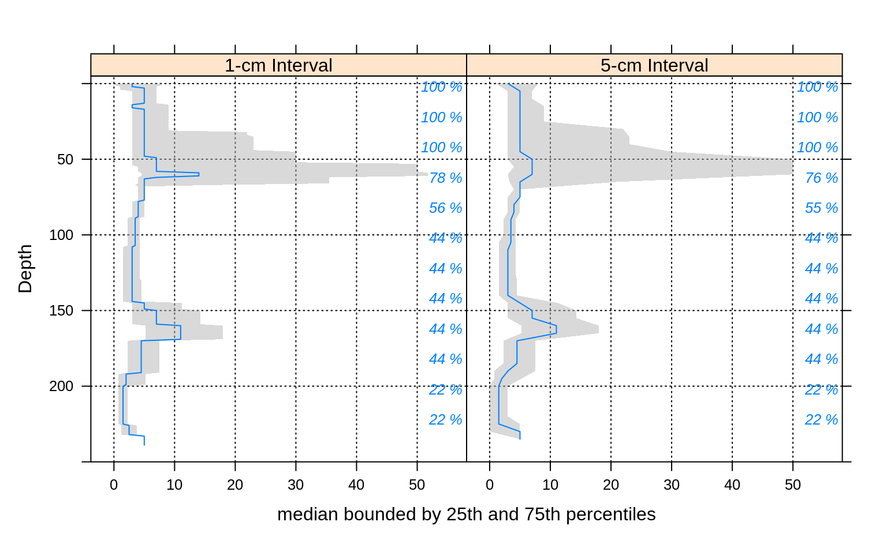
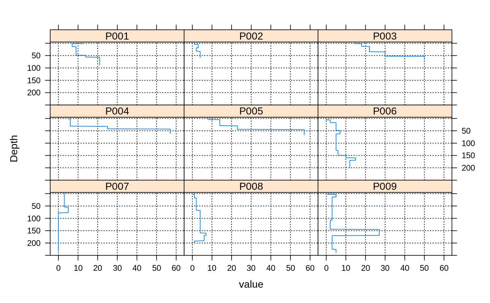
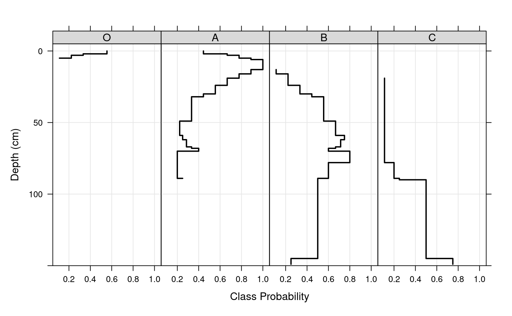
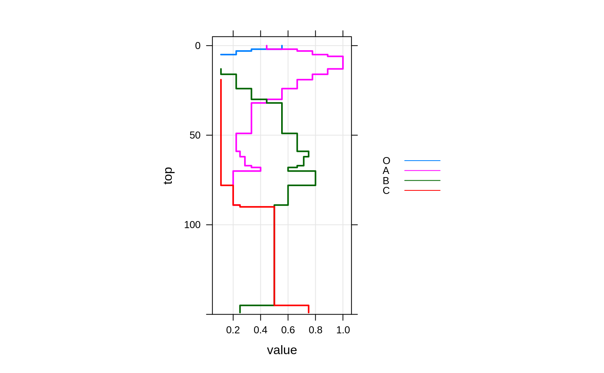
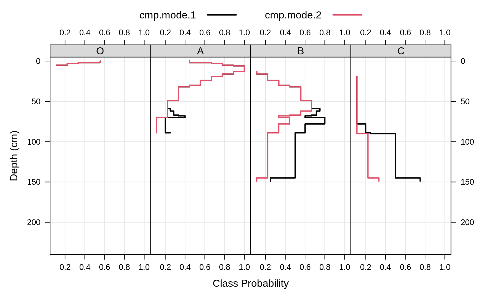

Aggregate soil properties along user-defined slabs, and optionally within
groups.
# S4 method for SoilProfileCollection
slab(
object,
fm,
slab.structure = 1,
strict = FALSE,
slab.fun = .slab.fun.numeric.default,
cpm = 1,
weights = NULL,
...
)a SoilProfileCollection
A formula: either groups ~ var1 + var2 + var3' where named variables are aggregated within groups' OR where named variables are
aggregated across the entire collection ~ var1 + var2 + var3'. Ifgroups`
is a factor it must not contain NA.
A user-defined slab thickness (defined by an integer), or user-defined structure (numeric vector). See details below.
logical: should horizons be strictly checked for self-consistency?
Function used to process each 'slab' of data, ideally
returning a vector with names attribute. Defaults to a wrapper function
around stats::quantile. See details.
Strategy for normalizing slice-wise probabilities, dividing by either: number of profiles with data at the current slice (cpm=1), or by the number of profiles in the collection (cpm=2). Mode 1 values will always sum to the contributing fraction, while mode 2 values will always sum to 1.
Column name containing weights. NOT YET IMPLEMENTED
further arguments passed to slab.fun
Output is returned in long format, such that slice-wise aggregates
are returned once for each combination of grouping level (optional),
variable described in the fm argument, and depth-wise 'slab'.
Aggregation of numeric variables, using the default slab function:
The names of variables included in the call to
slab.
The name of the grouping variable when provided, otherwise a fake grouping variable named 'all.profiles'.
The slice-wise 5th percentile.
The slice-wise 25th percentile
The slice-wise 50th percentile (median)
The slice-wise 75th percentile
The slice-wise 95th percentile
The slab top boundary.
The slab bottom boundary.
The fraction of profiles contributing to the aggregate value, ranges from 1/n_profiles to 1.
When a single factor variable is used, slice-wise probabilities for each level of that factor are returned as:
The names
of variables included in the call to slab.
The name of the grouping variable when provided, otherwise a fake grouping variable named 'all.profiles'.
The slice-wise probability of level A
The slice-wise probability of level B
The slice-wise probability of level n
The slab top boundary.
The slab bottom boundary.
The fraction of profiles contributing to the aggregate value, ranges from 1/n_profiles to 1.
Multiple continuous variables OR a single categorical (factor) variable can
be aggregated within a call to slab. Basic error checking is
performed to make sure that top and bottom horizon boundaries make sense.
User-defined aggregate functions (slab.fun) should return a named
vector of results. A new, named column will appear in the results of
slab for every named element of a vector returned by slab.fun.
See examples below for a simple example of a slab function that computes
mean, mean-1SD and mean+1SD. The default slab function wraps
stats::quantile from the Hmisc package, which requires at least 2
observations per chunk. Note that if group is a factor it must not contain
NAs.
Sometimes slab is used to conveniently re-arrange data vs. aggregate.
This is performed by specifying identity in slab.fun. See
examples beflow for a demonstration of this functionality.
The default slab.fun was changed 2019-10-30 from a wrapper around
Hmisc::hdquantile to a wrapper around stats::quantile. See
examples below for a simple way to switch to the HD quantile estimator.
Execution time scales linearly (slower) with the total number of profiles in
object, and exponentially (faster) as the number of profiles / group
is increased. slab and slice are much faster and require less
memory if input data are either numeric or character.
There are several possible ways to define slabs, using
slab.structure:
e.g. 10: data are aggregated over a regular sequence of 10-unit thickness slabs
e.g. c(50, 60): data are aggregated over depths spanning 50--60 units
e.g. c(0, 5, 10, 50, 100): data are aggregated over the depths spanning 0--5, 5--10, 10--50, 50--100 units
Arguments to slab have changed with aqp 1.5 (2012-12-29)
as part of a code clean-up and optimization. Calculation of
weighted-summaries was broken in aqp 1.2-6 (2012-06-26), and removed
as of aqp 1.5 (2012-12-29). slab replaced the previously
defined soil.slot.multiple function as of aqp 0.98-8.58
(2011-12-21).
Typical
usage, where input is a SoilProfileCollection.
D.E. Beaudette, P. Roudier, A.T. O'Geen, Algorithms for quantitative pedology: A toolkit for soil scientists, Computers & Geosciences, Volume 52, March 2013, Pages 258-268, 10.1016/j.cageo.2012.10.020.
Harrell FE, Davis CE (1982): A new distribution-free quantile estimator. Biometrika 69:635-640.
##
## basic examples
##
library(lattice)
library(grid)
library(data.table)
# load sample data, upgrade to SoilProfileCollection
data(sp1)
depths(sp1) <- id ~ top + bottom
# aggregate entire collection with two different segment sizes
a <- slab(sp1, fm = ~ prop)
b <- slab(sp1, fm = ~ prop, slab.structure=5)
# check output
str(a)
#> 'data.frame': 240 obs. of 10 variables:
#> $ variable : Factor w/ 1 level "prop": 1 1 1 1 1 1 1 1 1 1 ...
#> $ all.profiles : num 1 1 1 1 1 1 1 1 1 1 ...
#> $ p.q5 : num 0 0 0 0.4 0.4 0.4 1.4 1.4 1.4 1.4 ...
#> $ p.q25 : num 0 0 1 1 1 3 3 3 3 3 ...
#> $ p.q50 : num 3 3 3 5 5 5 5 5 5 5 ...
#> $ p.q75 : num 8 8 7 7 7 7 7 7 7 7 ...
#> $ p.q95 : num 13.6 13.6 14 14 14 16.4 16.4 16.4 16.4 16.4 ...
#> $ top : int 0 1 2 3 4 5 6 7 8 9 ...
#> $ bottom : int 1 2 3 4 5 6 7 8 9 10 ...
#> $ contributing_fraction: num 1 1 1 1 1 1 1 1 1 1 ...
# stack into long format
ab <- make.groups(a, b)
ab$which <- factor(ab$which, levels=c('a','b'),
labels=c('1-cm Interval', '5-cm Interval'))
# plot median and IQR
# custom plotting function for uncertainty viz.
xyplot(top ~ p.q50 | which, data=ab, ylab='Depth',
xlab='median bounded by 25th and 75th percentiles',
lower=ab$p.q25, upper=ab$p.q75, ylim=c(250,-5),
panel=panel.depth_function,
prepanel=prepanel.depth_function,
cf=ab$contributing_fraction,
alpha=0.5,
layout=c(2,1), scales=list(x=list(alternating=1))
)

###
### re-arrange data / no aggregation
###
# load sample data, upgrade to SoilProfileCollection
data(sp1)
depths(sp1) <- id ~ top + bottom
#> This is already a SoilProfileCollection-class object, doing nothing.
# arrange data by ID
a <- slab(sp1, fm = id ~ prop, slab.fun=identity)
# convert id to a factor for plotting
a$id <- factor(a$id)
# check output
str(a)
#> 'data.frame': 2160 obs. of 6 variables:
#> $ variable : Factor w/ 1 level "prop": 1 1 1 1 1 1 1 1 1 1 ...
#> $ id : Factor w/ 9 levels "P001","P002",..: 1 1 1 1 1 1 1 1 1 1 ...
#> $ value : int 13 13 7 7 7 7 7 7 7 7 ...
#> $ top : int 0 1 2 3 4 5 6 7 8 9 ...
#> $ bottom : int 1 2 3 4 5 6 7 8 9 10 ...
#> $ contributing_fraction: num 1 1 1 1 1 1 1 1 1 1 ...
# plot via step function
xyplot(top ~ value | id, data=a, ylab='Depth',
ylim=c(250, -5), as.table=TRUE,
panel=panel.depth_function,
prepanel=prepanel.depth_function,
scales=list(x=list(alternating=1))
)

##
## categorical variable example
##
data(sp1)
depths(sp1) <- id ~ top + bottom
#> This is already a SoilProfileCollection-class object, doing nothing.
# normalize horizon names: result is a factor
sp1$name <- generalize.hz(
sp1$name,
new = c('O','A','B','C'),
pat = c('O', '^A','^B','C')
)
# compute slice-wise probability so that it sums to contributing fraction, from 0-150
a <- slab(sp1, fm= ~ name, cpm=1, slab.structure=0:150)
# convert wide -> long for plotting
# result is a data.table
# genhz factor levels are set by order in `measure.vars`
a.long <- melt(
as.data.table(a),
id.vars = c('top','bottom'),
measure.vars = c('O', 'A', 'B', 'C'),
)
# plot horizon type proportions using panels
xyplot(top ~ value | variable,
data = a.long, subset=value > 0,
col = 1, lwd = 2,
xlab = 'Class Probability',
ylab = 'Depth (cm)',
strip = strip.custom(bg = grey(0.85)),
scales = list(x = list(alternating = FALSE)),
ylim = c(150, -5), type=c('S','g'),
horizontal = TRUE, layout = c(4,1)
)

# again, this time using groups
xyplot(top ~ value,
data = a.long,
groups = variable,
subset = value > 0,
ylim = c(150, -5),
type = c('S','g'),
horizontal = TRUE,
asp = 2,
lwd = 2,
auto.key = list(
lines = TRUE,
points = FALSE,
cex = 0.8,
columns = 1,
space = 'right'
)
)

# adjust probability to size of collection, from 0-150
a.1 <- slab(sp1, fm= ~ name, cpm = 2, slab.structure = 0:150)
# convert wide -> long for plotting
# result is a data.table
# genhz factor levels are set by order in `measure.vars`
a.1.long <- melt(
as.data.table(a.1),
id.vars = c('top','bottom'),
measure.vars = c('O','A','B','C')
)
# combine aggregation from `cpm` modes 1 and 2
g <- make.groups(cmp.mode.1 = a.long, cmp.mode.2 = a.1.long)
# plot horizon type proportions
xyplot(top ~ value | variable,
groups = which,
data = g, subset = value > 0,
ylim = c(240, -5),
type = c('S','g'),
horizontal = TRUE,
layout = c(4,1),
auto.key = list(lines = TRUE, points = FALSE, columns = 2),
par.settings = list(superpose.line = list(col = c(1, 2), lwd = 2)),
scales = list(alternating = 3),
xlab = 'Class Probability',
ylab = 'Depth (cm)',
strip = strip.custom(bg = grey(0.85))
)

# apply slice-wise evaluation of max probability, and assign ML-horizon at each slice
(gen.hz.ml <- get.ml.hz(a, c('O','A','B','C')))
#> hz top bottom confidence pseudo.brier mean.H
#> 1 O 0 2 37 0.3950617 0.9910761
#> 2 A 2 32 75 0.1547325 0.7922828
#> 3 B 32 145 57 0.3574667 1.0813045
#> 4 C 145 150 71 0.1250000 0.8112781
if (FALSE) {
##
## HD quantile estimator
##
library(soilDB)
library(lattice)
library(data.table)
# sample data
data('loafercreek', package = 'soilDB')
# defaul slab.fun wraps stats::quantile()
a <- slab(loafercreek, fm = ~ total_frags_pct + clay)
# use HD quantile estimator from Hmisc package instead
a.HD <- slab(loafercreek, fm = ~ total_frags_pct + clay, slab.fun = aqp:::.slab.fun.numeric.HD)
# combine
g <- make.groups(standard=a, HD=a.HD)
# note differences
densityplot(~ p.q50 | variable, data=g, groups=which,
scales=list(relation='free', alternating=3, tick.number=10, y=list(rot=0)),
xlab='50th Percentile', pch=NA, main='Loafercreek',
auto.key=list(columns=2, points=FALSE, lines=TRUE),
par.settings=list(superpose.line=list(lwd=2, col=c('RoyalBlue', 'Orange2')))
)
# differences are slight but important
xyplot(
top ~ p.q50 | variable, data=g, groups=which,
xlab='Value', ylab='Depth (cm)',
asp=1.5, main='Loafercreek',
lower=g$p.q25, upper=g$p.q75,
sync.colors=TRUE, alpha=0.25, cf=g$contributing_fraction,
ylim=c(115,-5), layout=c(2,1), scales=list(x=list(relation='free')),
par.settings=list(superpose.line=list(lwd=2, col=c('RoyalBlue', 'Orange2'))),
strip=strip.custom(bg=grey(0.85)),
panel=panel.depth_function,
prepanel=prepanel.depth_function,
auto.key=list(columns=2, lines=TRUE, points=FALSE)
)
##
## multivariate examples
##
data(sp3)
# add new grouping factor
sp3$group <- 'group 1'
sp3$group[as.numeric(sp3$id) > 5] <- 'group 2'
sp3$group <- factor(sp3$group)
# upgrade to SPC
depths(sp3) <- id ~ top + bottom
site(sp3) <- ~ group
# custom 'slab' function, returning mean +/- 1SD
mean.and.sd <- function(values) {
m <- mean(values, na.rm=TRUE)
s <- sd(values, na.rm=TRUE)
upper <- m + s
lower <- m - s
res <- c(mean=m, lower=lower, upper=upper)
return(res)
}
# aggregate several variables at once, within 'group'
a <- slab(sp3, fm = group ~ L + A + B, slab.fun = mean.and.sd)
# check the results:
# note that 'group' is the column containing group labels
xyplot(
top ~ mean | variable, data=a, groups=group,
lower=a$lower, upper=a$upper,
sync.colors=TRUE, alpha=0.5,
cf = a$contributing_fraction,
xlab = 'Mean Bounded by +/- 1SD',
ylab = 'Depth (cm)',
ylim=c(125,-5), layout=c(3,1),
scales=list(x=list(relation='free')),
par.settings = list(superpose.line=list(lwd=2, col=c('RoyalBlue', 'Orange2'))),
panel = panel.depth_function,
prepanel = prepanel.depth_function,
strip = strip.custom(bg=grey(0.85)),
auto.key = list(columns=2, lines=TRUE, points=FALSE)
)
# compare a single profile to the group-level aggregate values
a.1 <- slab(sp3[1, ], fm = group ~ L + A + B, slab.fun = mean.and.sd)
# manually update the group column
a.1$group <- 'profile 1'
# combine into a single data.frame:
g <- rbind(a, a.1)
# plot with customized line styles
xyplot(
top ~ mean | variable, data=g, groups=group, subscripts=TRUE,
lower=a$lower, upper=a$upper, ylim=c(125,-5),
layout=c(3,1), scales=list(x=list(relation='free')),
xlab = 'Mean Bounded by +/- 1SD',
ylab = 'Depth (cm)',
panel=panel.depth_function,
prepanel=prepanel.depth_function,
sync.colors = TRUE, alpha = 0.25,
par.settings = list(
superpose.line = list(
col = c('orange', 'royalblue', 'black'),
lwd = 2, lty = c(1,1,2)
)
),
strip = strip.custom(bg=grey(0.85)),
auto.key = list(columns=3, lines=TRUE, points=FALSE)
)
## again, this time for a user-defined slab from 40-60 cm
a <- slab(sp3,
fm = group ~ L + A + B,
slab.structure = c(40,60),
slab.fun = mean.and.sd
)
# now we have weighted average properties (within the defined slab)
# for each variable, and each group
# convert long -> wide
dcast(
as.data.table(a),
formula = group + top + bottom ~ variable,
value.var = 'mean'
)
## this time, compute the weighted mean of selected properties, by profile ID
a <- slab(sp3,
fm = id ~ L + A + B,
slab.structure = c(40,60),
slab.fun = mean.and.sd
)
# convert long -> wide
dcast(
as.data.table(a),
formula = id + top + bottom ~ variable,
value.var = 'mean'
)
## aggregate the entire collection, using default slab function (hdquantile)
## note the missing left-hand side of the formula
a <- slab(sp3, fm= ~ L + A + B)
## weighted-aggregation -- NOT YET IMPLEMENTED --
# load sample data, upgrade to SoilProfileCollection
data(sp1)
depths(sp1) <- id ~ top + bottom
# generate pretend weights as site-level attribute
set.seed(10101)
sp1$site.wts <- runif(n=length(sp1), min=20, max=100)
}